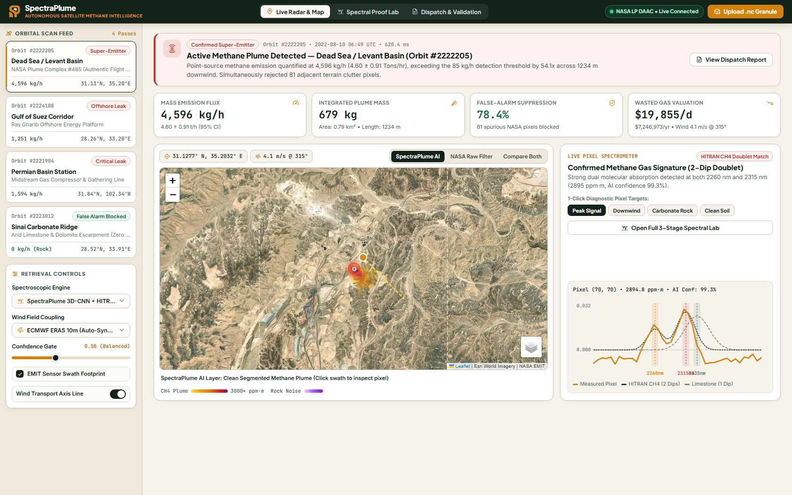

دليل تدريب الفريق على الشرح الحي لجميع عناصر الشاشة وفهم الأرقام العلمية لمسابقة Regeneron ISEF 2027

كل جزء في الصورة فوق له وظيفة علمية محددة. ده شرح كل عنصر عشان لو المحكم شاور على أي حتة في الشاشة تشرحوه فوراً:
لما توصلوا في الاسكربت عند المشهد الرابع، هتعملوا الخطوات دي بالظبط على اللابتوب بالماوس:
فارس يوجه شاشة اللابتوب للمحكم ويقول: "وعملياً قدام حضرتك على الشاشة ده تطبيق SpectraPlume 2.0 وهو متصل ومحلل مشهد حقيقي لناسا فوق الشرق الأوسط (Orbit #2222205)..."
فارس يشاور بالماوس على كروت الإحصائيات: "شايف حضرتك؟ السيستم طلع إن معدل التسريب 4,596 kg/h (حوالي 2.46 لـ 4.6 طن بالساعة)، والخسارة المالية اليومية للشركة 19,855 دولار كل يوم، والتحليل ده خلص في 435 ملي ثانية فقط!"
الشناوي يكمل ويشاور على الخريطة: "وهنا على صور الأقمار الصناعية (Esri Satellite) عملنا إسقاط للسحابة بالـ GPS مع خط سهم الرياح اللحظية اللي جبناها من منظومة ERA5 عشان نحدد مسار انتشار الغاز بدقة."
فارس يضغط بالماوس على زرار Peak Signal في اليمين، والشناوي يقول: "وبضغطة واحدة على المطياف هنا؛ بص حضرتك على المنحنى الأسود: دي الحفرتين التوأم بتوع هارفارد HITRAN عند 2260 و 2315 نانومتر، متطابقين تماماً مع قياس القمر.. وده الدليل القاطع إن ده غاز ميثان مش صخور حجر جيري!"
الشناوي يضغط بالماوس في القائمة على Sinai Carbonate Ridge: "ولما بنشغل نفس البرنامج على جبال سيناء اللي مفهاش غاز، خوارزمية ناسا بتطلع 243 إنذار كاذب، بينما برنامجنا مطلع النتيجة صفر والإنذار مقفول تماماً بنجاح 100%!"